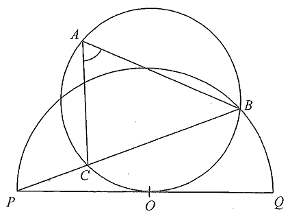

Circle $ABC$Tangent $PQ$Semicircle centre $O$Chords / radiiAngle marked
Drag your finger / scroll the solution — the figure highlights each step.
HKDSE 2012 Paper 2 · Q41Geometry
Question
In the figure, PQ is the tangent to the circle ABC at O,
where O is the centre of the semicircle PBQ.
It is given that BCP is a straight line.
If $\angle BPQ = 12^\circ$, then $\angle BAC =$
A. $18^\circ$ B. $24^\circ$ C. $54^\circ$ D. $36^\circ$

Figure (original exam diagram)
Solution
STEP 1 · Angle at the centre = 2 × angle at the circumference
$PQ$ is a diameter of the semicircle and $B$ lies on it, so $\angle PBQ = 90^\circ$.
In $\triangle BPQ$:
Equivalently: the angle at the centre $\angle BOQ$ subtends arc $BQ$;
the angle at the circumference $\angle BPQ = 12^\circ$ subtends the same arc, so
$\angle BOQ = 2\times 12^\circ = 24^\circ$.
Angle at the Centre\(\angle AOB=2\,\angle ACB\quad(\text{same arc }AB)\)The angle at the centre \(\angle BOQ\) and the angle at the circumference \(\angle BPQ=12^{\circ}\) stand on the same arc \(BQ\).
STEP 2 · Angle in alternate segment
$PQ$ is the tangent at $O$ to the circle $ABC$, and $OB$ is a chord. The angle between
the tangent $PQ$ and the chord $OB$ equals the angle in the alternate segment:
$$\angle OAB = \angle BOQ = 24^\circ$$
Here $\angle BOQ$ is the angle the chord $OB$ makes with the tangent
$PQ$ at $O$ (the arc $OB$ on the far side carries the point $A$).
Tangent-Chord Angle (Alternate Segment Theorem)\(\angle(\text{tangent }PQ,\ \text{chord }OB)=\angle OAB\)The angle between the tangent \(PQ\) at \(O\) and the chord \(OB\) equals the angle that \(OB\) subtends at \(A\).
STEP 3 · Isosceles triangle & equal base angles
$OB = OP$ (radii of the same circle), so $\triangle OBP$ is isosceles and
$$\angle OBP = \angle OPB = 12^\circ$$
Since $B,\,C,\,P$ are collinear, $\angle OBC = \angle OBP = 12^\circ$.
STEP 4 · Angles in the same segment
Chords $OC$—well, look at the circle $ABC$: $\angle OAC$ and $\angle OBC$ are angles
in the same segment standing on the chord $OC$, therefore
$$\angle OAC = \angle OBC = 12^\circ$$
Angles in the Same Segment\(\angle OAC=\angle OBC\quad(\text{same chord }OC)\)Both angles stand on the chord \(OC\) of the circle \(ABC\), so they are equal.
STEP 5 · Add the two parts of $\angle BAC$
The ray $AO$ divides $\angle BAC$ into $\angle OAB$ and $\angle OAC$, so
💡 Tip: In tangent problems, always look for (i) radius ⊥ tangent, (ii) the alternate
segment theorem, and (iii) radii forming isosceles triangles.
ANSWER
D · $36^\circ$
PRACTICESimilar question — try it yourself
Question. In the figure, \(PQ\) is the tangent to the circle \(ABC\) at \(O\), where \(O\) is the centre of the semicircle \(PBQ\). It is given that \(BCP\) is a straight line and \(\angle BPQ=18^{\circ}\). Find \(\angle BAC\).
Show the worked solution
Step 1. \(PQ\) is a diameter of the semicircle \(PBQ\), so \(\angle PBQ=90^{\circ}\) (angle in a semicircle). The angle at the centre is twice the angle at the circumference on the same arc: \(\angle BOQ=2\times18^{\circ}=36^{\circ}\).
Step 2. By the tangent-chord angle (alternate segment theorem), the angle between \(PQ\) and the chord \(OB\) equals \(\angle OAB\), so \(\angle OAB=\angle BOQ=36^{\circ}\).
Step 3. \(OB=OP\) (radii), so \(\triangle OBP\) is isosceles and \(\angle OBP=\angle OPB=18^{\circ}\). As \(B,C,P\) are collinear, \(\angle OBC=18^{\circ}\).
Step 4. Angles in the same segment on chord \(OC\): \(\angle OAC=\angle OBC=18^{\circ}\).